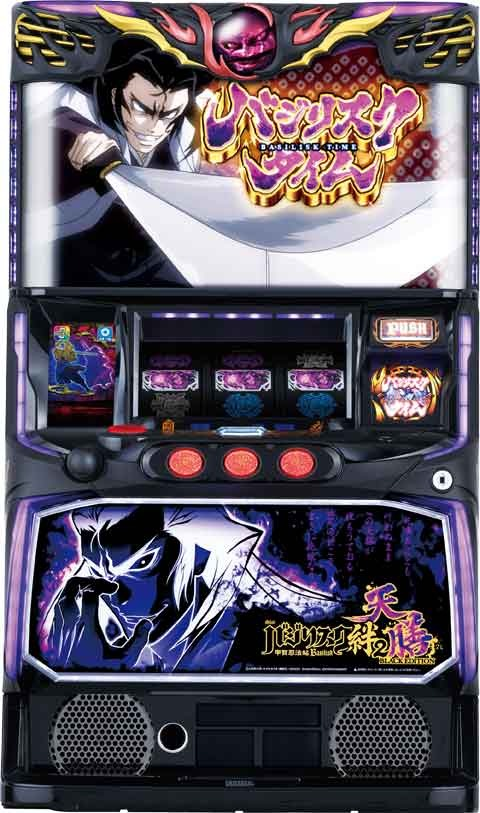
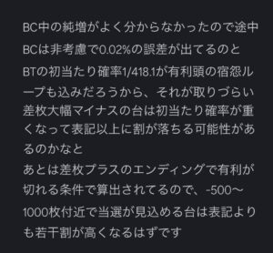

Lバジリスク絆2天善

[天井情報]
333G+α BC確定
BCスルー天井 7回後8回目 BT確定
[リセット判別]
ガックンなし
[有利区間について]
同一有利区間内0から差枚1000枚以上で有利切れる。
有利切れ後は宿怨チャレンジ突入。
AT13セット以上でエンディング発生。
宿怨チャレンジ突入。失敗でもAT突入。
狙い目
【早見表】
{kind=link}
※差枚やBT間等諸々考慮する
[リセット狙い]
無し
[BC間天井狙い]
0スルー 260Gから
1スルー以降 200Gから
[スルー天井狙い]
4スルーから
[宿怨ポイント狙い]
天膳BC4段階(パネル横)は宿怨ポイント解放まで。
閉店まで少なくとも4時間以上は必要？
内部ポイント保持してると天膳BCの示唆頻発
{kind=link}
獲得量示唆
{kind=link}
蓄積量示唆
蓄積量示唆は小でもかなり溜まっている傾向
参考記事 なな徹
[有利区間切れ狙い]
0スルー差枚800枚以上
バジリスク絆2天善
0から差枚1000枚以上で有利区間切れて宿怨チャレンジ突入。
※宿怨チャレンジ＝有利切れでは無いので注意。
やめ時
1G回してやめ。
BT終了画面でサブ液晶タッチで絆ランプ点灯ならBT当選まで。
その他
・ハイエナ消化時
BC天井狙い時、
BCスルー天井狙い時(ATまで突っ張る場合)は
天膳BCで消化
・宿怨ポイントみて解放まで追うか判断
設定狙い時は
弦之助BCで消化
・宿怨解放後の狙い目について。
宿怨解放後はだいぶ辛くなるデータが出てきました。
宿怨pt解放済みの狙い目は、狙い目表の左下に書いてありますが、しっかりボーダー上げた方が良さそうです。
ただ、差枚プラスの台で有利切れ狙いをする場合は影響が少ないと思われます。(そもそも差枚プラマイ前後の台はptが溜まっていないケースが多い)
また、ハイエナする際は見れる範囲だけでも宿怨ptでの宿怨チャレンジの履歴を見る癖をつけときましょう。
以下のデータ履歴の様にpt解放時は、直撃の履歴があります。
{kind=link}
・差枚別の機械割表（はる坊さん作成）
差枚でこれくらい機械割が変わるという参考に
{kind=link}

参考元
基本情報
- メーカー: ミズホ
- 機械割: 97.4% 〜 114.9%
- 導入開始日: 2023年12月18日（月）
- ゲーム性概要: 『バジリスク絆2』のゲーム性に加え、スマスロだから実現した新要素「宿怨ループ」を搭載して、バジリスクシリーズ最新作が登場する。 ゲーム性は前作とほぼ同じなので、前作を打っていたプレイヤーなら予備知識なしでも気軽に楽しむことが可能。スマスロだからこそ搭載できた新要素「宿怨チャレンジ」にも注目だ。


打ち方
打ち方・小役
打ち方（小役狙い）
基本的に左1stからのオールフリー打ちでOK。 ナビ発生時はナビに従って消化しよう。
解析情報通常時
小役関連
小役確率
| 役 | 確率 |
|---|---|
| 共通ベル | 1/81.9 |
| 巻物 | 1/72.8 |
| 弱チェリー | 1/46.1～41.4 |
| 強チェリー | 1/131.1 |
| チャンス目 | 1/199.8 |
| 通常リプレイ | 1/24.3 |
| 瞳術揃いA | 1/13.4 |
| 瞳術揃いB | 1/129.8 |
内部状態関連
内部状態概要
通常・高確・超高確の3種類があり、BC当選率が変化する。
巻物時のBC当選率
| 内部状態 | 当選率 |
|---|---|
| 通常 | 約25% |
| 高確 | 約50% |
| 超高確 | 約80% |
高確＆超高確移行率
通常時は 成立役と滞在モードを参照して高確・超高確移行を抽選 。当選時は同時に高確・超高確のゲーム数も抽選する。 超高確中に再度超高確に当選した場合はゲーム数が加算。高確・超高確ともにBCに当選した時点で残りゲーム数はリセットされる。 高確333G移行時は通常CorDなのでBC当選まで打つことをオススメだ。
［ 通常A 滞在時］高確＆超高確移行率
| 状態 | その他 | 共通ベル | 弱チェリー | 強チェリー |
|---|---|---|---|---|
| 高確 （ゲーム数抽選） | 0.4% | 9.4% | 20.3% | 89.8% |
| 超高確 （ゲーム数抽選） | － | 0.8% | － | 10.2% |
| 高確333G | － | － | － | － |
| 超高確5G | － | － | － | － |
［ 通常B 滞在時］高確＆超高確移行率
| 状態 | その他 | 共通ベル | 弱チェリー | 強チェリー |
|---|---|---|---|---|
| 高確 （ゲーム数抽選） | 0.4% | 9.4% | 18.9% | 89.8% |
| 超高確 （ゲーム数抽選） | － | 0.8% | 1.6% | 10.2% |
| 高確333G | － | － | － | － |
| 超高確5G | 0.4% | － | － | － |
［ 通常C 滞在時］高確＆超高確移行率
| 状態 | その他 | 共通ベル | 弱チェリー | 強チェリー |
|---|---|---|---|---|
| 高確 （ゲーム数抽選） | 0.8% | 14.0% | 20.3% | 88.3% |
| 超高確 （ゲーム数抽選） | － | 2.0% | 3.9% | 10.2% |
| 高確333G | － | 0.4% | 0.8% | 1.6% |
| 超高確5G | 0.8% | － | － | － |
［ 通常D 滞在時］高確＆超高確移行率
| 状態 | その他 | 共通ベル | 弱チェリー | 強チェリー |
|---|---|---|---|---|
| 高確 （ゲーム数抽選） | 0.4% | 9.0% | 18.0% | 88.3% |
| 超高確 （ゲーム数抽選） | － | 0.8% | 1.6% | 10.2% |
| 高確333G | － | 0.4% | 0.8% | 1.6% |
| 超高確5G | 0.4% | － | － | － |
高確＆超高確のゲーム数振り分け （ゲーム数抽選時）
| ゲーム数 | 高確時 | 超高確時 |
|---|---|---|
| 15G | 75.0% | 66.4% |
| 25G | 23.4% | 32.0% |
| 35G | 1.6% | 1.6% |
モード
モード概要
通常モードはA〜Cの4種類があり、16種類のテーブルで管理。最終的に通常Dへ行けばBC当選＝BT突入となる。 また、今作でもチャンス目成立時はモード昇格が抽選される。
BCスルー回数ごとの移行モードテーブル
| スルー回数 | テーブル1 | テーブル2 | テーブル3 | テーブル4 |
|---|---|---|---|---|
| BC初回 | B | B | B | B |
| 1回 | B | A | B | A |
| 2回 | A | B | A | B |
| 3回 | B | A | B | A |
| 4回 | A | B | B | C |
| 5回 | B | A | C | B |
| 6回 | D | D | D | D |
| 7回 | － | － | － | － |
| スルー回数 | テーブル5 | テーブル6 | テーブル7 | テーブル8 |
| BC初回 | A | B | B | C |
| 1回 | A | B | A | C |
| 2回 | A | B | C | C |
| 3回 | A | C | B | C |
| 4回 | A | B | C | C |
| 5回 | A | C | B | C |
| 6回 | C | D | D | D |
| 7回 | D | － | － | － |
| スルー回数 | テーブル9 | テーブル10 | テーブル11 | テーブル12 |
| BC初回 | C | B | C | B |
| 1回 | A | C | B | C |
| 2回 | C | A | B | B |
| 3回 | A | B | A | C |
| 4回 | C | A | B | B |
| 5回 | B | B | A | C |
| 6回 | D | D | D | D |
| 7回 | － | － | － | － |
| スルー回数 | テーブル13 | テーブル14 | テーブル15 | テーブル16 |
| BC初回 | C | A | A | D |
| 1回 | B | C | D | － |
| 2回 | C | A | － | － |
| 3回 | B | D | － | － |
| 4回 | C | － | － | － |
| 5回 | B | － | － | － |
| 6回 | D | － | － | － |
| 7回 | － | － | － | － |
BC抽選
BC当選率（設定1）
毎ゲーム、内部状態と成立役を参照してBCを抽選。瞳術揃い時は月下閃滅又はプレミアムバジリスクチャンス（PBC）が確定する。
［内部状態： 通常 ］BC当選率
| 役 | 異色BC | 同色BC | トータル |
|---|---|---|---|
| ハズレ | － | 0.02% | 0.02% |
| リプレイ | － | 0.01% | 0.01% |
| 押し順ベル | － | 0.01% | 0.01% |
| 共通ベル | － | 0.10% | 0.10% |
| 弱チェリー | － | 0.02% | 0.02% |
| 強チェリー | 12.20% | 0.10% | 12.30% |
| 巻物 | 24.39% | 0.19% | 24.58% |
［内部状態： 高確 ］BC当選率
| 役 | 異色BC | 同色BC | トータル |
|---|---|---|---|
| ハズレ | － | 0.05% | 0.05% |
| リプレイ | － | 0.01% | 0.01% |
| 押し順ベル | － | 0.01% | 0.01% |
| 共通ベル | － | 0.20% | 0.20% |
| 弱チェリー | － | 0.05% | 0.05% |
| 強チェリー | 24.39% | 0.19% | 24.58% |
| 巻物 | 50.00% | 0.39% | 50.39% |
［内部状態： 超高確 ］BC当選率
| 役 | 異色BC | 同色BC | トータル |
|---|---|---|---|
| ハズレ | 2.99% | 0.12% | 3.11% |
| リプレイ | 0.76% | 0.02% | 0.78% |
| 押し順ベル | 0.76% | 0.02% | 0.78% |
| 共通ベル | 11.90% | 0.48% | 12.38% |
| 弱チェリー | 6.10% | 0.15% | 6.25% |
| 強チェリー | 76.92% | 1.87% | 78.79% |
| 巻物 | 76.92% | 1.87% | 78.79% |
ゲーム性解説
前作との違い
基本的なゲーム性はバジリスク〜甲賀忍法帖〜絆2と同じ。絵柄や天膳BCの示唆内容など小さな変更点もあるが、一番大きな変更ポイントは 宿怨チャレンジ の追加。 宿怨チャレンジは 成功すると天膳BT＋10人状態スタート、失敗してもBTに突入 するCZで、宿怨ポイント（いわゆる穢れ）規定量やエンディング終了後に突入する。
宿怨ポイント
宿怨ポイント概要
通常時は様々なタイミングで宿怨ポイントを獲得。一定数溜まると、BC当選時にBTが確定する宿怨チャレンジへ移行。 通常時や天膳BC終了後にポイント示唆が発生する。
［通常時の示唆］

［天膳BC終了後］ 液晶左右にあるサイドランプの動きで示唆!?

演出動画
ロングフリーズ
プレミアムBC確定演出。上位シナリオ濃厚かつ、絆高確スタートも濃厚となる。
解析情報ボーナス時
バジリスクタイム（BT）
BT概要
前半の「追想の刻」、後半の「争忍の刻」で構成された継続率×セットタイプのAT。継続率は12セット1組のシナリオで管理、BC当選でセット継続が確定する。絆高確中にBCに当選した場合、次セットも絆高確になる。

バジリスクタイム（BT）性能
| 項目 | 内容 |
|---|---|
| ATタイプ | セット＆継続率管理 |
| 突入契機 | BC契機の抽選に当選 |
| 1Gあたりの純増 | 約2.9枚 |
| 継続ゲーム数 | 約40G （追想：10G以上、争忍：平均30G） |
| 消化中の抽選 | BC抽選（追想中は絆玉獲得も抽選） |
絆玉個数別の絆高確
| 個数 | 絆高確の種類 |
|---|---|
| 1個 | ［縁］［想］［恋］のいずれか |
| 2個 | ［縁想］［縁恋］［想恋］のいずれか |
| 3個 | 絆モード（全点灯） |
| 4個以上 | 絆モード＋残りを次回セットに持ち越し |
絆高確の対応役 （対応役当選でBCのチャンス）
| 絆高確 | 対応役 |
|---|---|
| 縁 | 巻物 |
| 想 | 弱チェリー・強チェリー |
| 恋 | 押し順不問ベル・押し順ベル・共通ベル |
| 絆 | 全役 |
✕・？・？区間の抽選
BTに当選してから追想の刻スタートする時に「✕・？・？」ナビが発生（いわゆるBTの準備区間）。この準備区間中は共通ベルやレア役でBTのセットストックを抽選する。
準備区間（ ✕ ・？・？まで）のBTストック当選率
| 役 | ストック1個 | ストック2個 | トータル |
|---|---|---|---|
| 共通ベル | 50.0% | － | 50.0% |
| 弱チェリー | 33.6% | － | 33.6% |
| 強チェリー | 62.5% | 12.5% | 75.0% |
| 巻物 | 75.0% | 25.0% | 100% |
| チャンス目 | 50.0% | 50.0% | 100% |
BTシナリオ
BT中の継続率は下記のシナリオで管理。今作には継続率Fという抽選でA〜Eの継続率になる要素が追加されている。 夢幻が選択されていた場合、ほかのシナリオと同じ挙動を取ることがあるため、各種シナリオ示唆が出ても夢幻である可能性がある。
BTシナリオ
| セット | しり あがり | 朝駆け | 混沌 | 安定 | 超しり あがり |
|---|---|---|---|---|---|
| 1 セット目 | B | D | F | C | B |
| 2 セット目 | B | C | F | C | B |
| 3 セット目 | B | B | F | C | B |
| 4 セット目 | B | A | F | C | C |
| 5 セット目 | C | D | F | C | C |
| 6 セット目 | C | A | F | C | C |
| 7 セット目 | C | D | F | C | D |
| 8 セット目 | C | A | F | C | D |
| 9 セット目 | D | D | F | C | D |
| 10 セット目 | D | A | F | C | E |
| 11 セット目 | D | D | F | C | E |
| 12 セット目 | E | A | F | C | E |
| 13 セット～ | F | F | D | F | F |
| セット | 波乱 | 超安定 | 超混沌 | 夢幻 | 激闘 |
| 1 セット目 | A | C | F | E | D |
| 2 セット目 | D | C | F | E | D |
| 3 セット目 | D | C | F | E | D |
| 4 セット目 | A | C | F | E | D |
| 5 セット目 | D | C | F | E | D |
| 6 セット目 | D | C | F | E | D |
| 7 セット目 | A | D | D | E | D |
| 8 セット目 | D | D | E | E | D |
| 9 セット目 | D | D | D | E | D |
| 10 セット目 | A | D | E | E | D |
| 11 セット目 | D | D | D | E | D |
| 12 セット目 | D | D | E | E | D |
| 13 セット～ | F | F | D | F | D |
BTシナリオ振り分け（設定1）
| シナリオ | 振り分け |
|---|---|
| しりあがり | 12.5% |
| 朝駆け | 15.6% |
| 混沌 | 18.8% |
| 安定 | 25.0% |
| 超しりあがり | 6.3% |
| 波乱 | 12.5% |
| 超安定 | 3.1% |
| 超混沌 | 4.7% |
| 夢幻 | 0.4% |
| 激闘 | 1.2% |
絆レベル
絆高確当選と絆玉の獲得は、4段階の絆レベルで管理。セットごとの絆レベルは 10種類のテーブル で決まっていて、絆レベル3以上は絆高確確定、レベル4時は朧チャンスに突入する。セット開始時や継続時にレベルの格上げを抽選。争忍の刻開始画面で弦之介や朧が出現した場合、次セットは朧チャンス突入濃厚だ（13セット目以降を除く）。
絆レベルテーブル
| BCセット | テーブル1 | テーブル2 | テーブル3 | テーブル4 | テーブル5 |
|---|---|---|---|---|---|
| 1セット目 | 絆LV3 | 絆LV3 | 絆LV3 | 絆LV3 | 絆LV3 |
| 2セット目 | 絆LV2 | 絆LV4 | 絆LV3 | 絆LV3 | 絆LV2 |
| 3セット目 | 絆LV2 | 絆LV2 | 絆LV3 | 絆LV3 | 絆LV2 |
| 4セット目 | 絆LV3 | 絆LV3 | 絆LV3 | 絆LV3 | 絆LV3 |
| 5セット目 | 絆LV2 | 絆LV2 | 絆LV2 | 絆LV3 | 絆LV4 |
| 6セット目 | 絆LV2 | 絆LV2 | 絆LV2 | 絆LV3 | 絆LV2 |
| 7セット目 | 絆LV3 | 絆LV3 | 絆LV3 | 絆LV3 | 絆LV3 |
| 8セット目 | 絆LV2 | 絆LV2 | 絆LV2 | 絆LV2 | 絆LV4 |
| 9セット目 | 絆LV3 | 絆LV3 | 絆LV3 | 絆LV3 | 絆LV3 |
| 10セット目 | 絆LV2 | 絆LV2 | 絆LV2 | 絆LV2 | 絆LV4 |
| 11セット目 | 絆LV2 | 絆LV2 | 絆LV2 | 絆LV2 | 絆LV2 |
| 12セット目 | 絆LV2 | 絆LV2 | 絆LV2 | 絆LV2 | 絆LV2 |
| 13セット目 ～ | 絆LV2 | 絆LV2 | 絆LV2 | 絆LV2 | 絆LV2 |
| BCセット | テーブル6 | テーブル7 | テーブル8 | テーブル9 | テーブル10 |
| 1セット目 | 絆LV3 | 絆LV3 | 絆LV3 | 絆LV3 | 絆LV3 |
| 2セット目 | 絆LV2 | 絆LV2 | 絆LV2 | 絆LV3 | 絆LV3 |
| 3セット目 | 絆LV2 | 絆LV2 | 絆LV2 | 絆LV3 | 絆LV3 |
| 4セット目 | 絆LV3 | 絆LV3 | 絆LV3 | 絆LV3 | 絆LV3 |
| 5セット目 | 絆LV4 | 絆LV2 | 絆LV2 | 絆LV3 | 絆LV3 |
| 6セット目 | 絆LV2 | 絆LV2 | 絆LV2 | 絆LV3 | 絆LV3 |
| 7セット目 | 絆LV3 | 絆LV3 | 絆LV3 | 絆LV3 | 絆LV3 |
| 8セット目 | 絆LV2 | 絆LV4 | 絆LV2 | 絆LV3 | 絆LV3 |
| 9セット目 | 絆LV3 | 絆LV3 | 絆LV3 | 絆LV3 | 絆LV3 |
| 10セット目 | 絆LV2 | 絆LV2 | 絆LV4 | 絆LV2 | 絆LV3 |
| 11セット目 | 絆LV2 | 絆LV2 | 絆LV2 | 絆LV2 | 絆LV3 |
| 12セット目 | 絆LV2 | 絆LV2 | 絆LV2 | 絆LV2 | 絆LV3 |
| 13セット目 ～ | 絆LV2 | 絆LV2 | 絆LV2 | 絆LV2 | 絆LV3 |
矛盾なしモード
新規追加された混沌・超混沌があるためBTシナリオの推測は難しくなったため、ステージ履歴の色と継続率が完全にリンクする矛盾なしモードを搭載。 BT開始画面が弦之介の場合にのみ選ばれる可能性がある 。 また、矛盾なしモード中は、争忍の刻開始画面のシナリオ示唆がデフォルメC（伊賀キャラの花見）のみとなる（設定示唆や継続濃厚画面は出現）。 ちなみに、今回のデフォルメCは前作と示唆内容が異なり、混沌or超混沌or夢幻or矛盾なしモードとなるため注意しておこう。
継続率が完全リンクするため、シナリオが推測しやすい！

［争忍の刻］BC当選率（設定1）
| 役 | 当選率 |
|---|---|
| ハズレ | 0.1% |
| 通常リプレイ | 0.1% |
| 瞳術揃い | 100% |
| 押し順ベル | 0.03% |
| 共通ベル | 63.1% |
| 弱チェリー | 12.6% |
| 強チェリー | 100% |
| 巻物 | 100% |
※数値は各絆高確滞在中のもの（例：巻物の当選率は縁高確時の数値）
同色高確状態
追想の刻・朧チャンス・争忍の刻中のハズレ、チャンス目で同色高確状態（滞在ゲーム数）を抽選。同色高確状態で当選したBCは 同色以上が確定 する。 同色高確状態はゲーム数管理で、滞在中に再度高確に当選した場合はゲーム数が加算。ゲーム数がクリアされるのは、ゲーム数消化時・BC当選時・BT終了時なので、残りがある場合は次セットに持ち越しされる。
同色高確状態当選率
| 高確ゲーム数 | ハズレ | チャンス目 |
|---|---|---|
| 5G | 7.8% | 50.0% |
| 10G | 1.6% | 37.5% |
| 15G | 0.4% | 11.7% |
| 30G | 0.4% | 0.8% |
| トータル | 10.2% | 100% |
同色高確状態中のBC振り分け
| 同色BCのパターン | 振り分け |
|---|---|
| 同色BC（朧チャンスなし） | 約75% |
| 同色BC＋朧チャンス | 約25% |
初当りBC
バジリスクチャンス概要
シリーズおなじみのボーナスで、BC当選時（モード依存）と消化中の小役でBTを抽選。 告知パターンは3種類あり、任意に選択できる。基本的なゲーム性は前作と同じだが、今作では天膳BCの宿怨ポイント示唆要素が追加されている。
バジリスクチャンス（BC）性能
| 項目 | 内容 |
|---|---|
| 突入契機 | 小役契機の抽選に当選、天井到達 |
| 継続ゲーム数 | 16G |
| 突入時の抽選 | 滞在モードに応じてBT抽選 |
| 消化中の抽選 | 小役契機で成功書き換え（BTストック）抽選 |
演出モードの特徴
| 演出モード | 内容 |
|---|---|
| 弦之介BC | 撃破人数によって設定を示唆 |
| 朧BC | 失敗時の終了画面でモードを示唆 |
| 天膳BC | 失敗時の終了画面で宿怨ポイント蓄積量を示唆 |
［BCの種類］ 同色BCはBT当選の期待度50%以上！

［弦之介BC］ チャンス告知タイプ。撃破数が増えるほど期待度がアップする。

［朧BC］ 後告知タイプ。最終ゲームでBTの当否を告知する。

［天膳BC］ 完全告知タイプ。天膳が復活すればBT当選だ。

BT書き換え当選率
初当り時のBC中はレア役でBT当選への書き換えを抽選。同色BC中は当選率が大幅にアップする。 BT当選が確定している場合、BT中のBCと同じくBTのセットストックが抽選される。
［初当りBC］BT書き換え当選率
| 役 | 異色BC | 同色BC |
|---|---|---|
| 瞳術揃い | 100% | 100% |
| 共通ベル | 1.1% | 4.4% |
| 弱チェリー | 0.5% | 2.2% |
| 強チェリー | 7.1% | 28.6% |
| 巻物 | 15.6% | 40.0% |
| チャンス目 | 3.4% | 7.2% |
BT中の抽選はコチラ
エピソードBC
エピソードBC概要
BT＋絆高確が確定するBC。エピソードの種類によって絆高確の種類が変化する。

エピソードBC性能
| 項目 | 内容 |
|---|---|
| 突入契機 | BC当選時の一部 |
| 継続ゲーム数 | 30G |
| 消化中の抽選 | BTストック抽選など |
| 特典 | BT＋絆高確確定 |
エピソードごとの絆高確
| エピソードの種類 | 移行する絆高確 |
|---|---|
| 左衛門&お胡夷 | 縁モード |
| 夜叉丸&蛍火 | 恋モード |
| 小四郎&朱絹 | 想モード |
| 弦之介&朧 | 絆モード |
［エピソードBC］BTストック当選率
| 役 | 当選率 |
|---|---|
| 瞳術揃い | 100% |
| 共通ベル | 1.8% |
| 弱チェリー | 0.9% |
| 強チェリー | 8.9% |
| 巻物 | 14.3% |
| チャンス目 | 2.6% |
プレミアムBC
プレミアムBC概要

プレミアムBC性能
| 項目 | 内容 |
|---|---|
| 突入契機 | ロングフリーズ時など |
| 継続ゲーム数 | 30G |
| 消化中の抽選 | BTストック抽選など |
| 特典 | BT （初回継続） ＋絆モード＋激闘シナリオ確定 |
絆モード＋高継続率が確定する。
［PBC］BTストック当選率
| 役 | 当選率 |
|---|---|
| 瞳術揃い | 100% |
| 共通ベル | 4.3% |
| 弱チェリー | 2.2% |
| 強チェリー | 28.6% |
| 巻物 | 40.0% |
| チャンス目 | 7.0% |
BT中のBC
BTストック当選率
BT中のBCではレア役でBTのセットストックを抽選。同色BC中は当選率が大幅にアップする。
［BT中のBC］BTストック当選率
| 役 | 異色BC | 同色BC |
|---|---|---|
| 瞳術揃い | 100% | 100% |
| 共通ベル | 2.3% | 5.2% |
| 弱チェリー | 1.1% | 2.6% |
| 強チェリー | 11.9% | 31.3% |
| 巻物 | 18.2% | 45.5% |
| チャンス目 | 3.5% | 8.5% |
初当り時の抽選はコチラ
月下閃滅
月下閃滅概要
セットストック特化ゾーンの性質を兼ねたBCの一種で20G継続。 消化中は毎ゲームセットストックを抽選する。

［月下閃滅］BTストック当選率
| 役 | 当選率 |
|---|---|
| ハズレ | 17.2% |
| 瞳術揃い | 100% |
| 押し順ベル | 8.5% |
| 共通ベル | 58.8% |
| 弱チェリー | 34.5% |
| 強チェリー | 100% |
| 巻物 | 100% |
| チャンス目 | 100% |
朧チャンス
朧チャンス概要
追想の刻の一部で突入する絆玉獲得の超高確状態。

宿怨チャレンジ
宿怨チャレンジ概要

失敗してもBTに突入するが、成功時は天膳BT＋10人状態スタートとなるため成功時の恩恵はとてつもなく大きい。
宿怨チャレンジ性能
| 項目 | 内容 |
|---|---|
| 突入契機 | 規定宿怨ポイント所持時のBC開始時 |
| 突入契機 | BT終了時の一部（エンディング後は必ず発生） |
| 継続ゲーム数 | 狙えカットイン3回失敗まで |
| 成功条件 | 狙え成功 or 30G消化 |
| 成功時の移行先 | 天膳BT＋10人状態 |
| 失敗時の移行先 | BT（継続率などは抽選） |
［カットイン時に紫BARが揃えば成功］

カットインの種類はコチラ
小役ごとの成功当選率
| 役 | 当選率 |
|---|---|
| 共通ベル | 10.2% |
| 弱チェリー | 6.3% |
| 強チェリー | 50.0% |
| 巻物 | 50.0% |
| 瞳術揃い | 50.0% |
演出情報
通常時
ステージごとの示唆
| ステージ | 示唆 |
|---|---|
| 甲賀／伊賀 | デフォルト |
| 佐屋路／七里の渡し | 高確示唆 |
| 吉田宿 | 超高確示唆 |
| 駿府城 | BCの期待大 |
| 極駿府城 | BCの期待大＋BT当選でシナリオ優遇!? |
［甲賀ステージ］

［伊賀ステージ］

［佐屋路ステージ］

［七里の渡しステージ］

［吉田宿ステージ］

［駿府城ステージ］

［極駿府城ステージ］

［通常時］連続演出期待度
| 演出 | 期待度 |
|---|---|
| 弦之介の水難 | ★ |
| 朧のしゃっくり騒動 | ★ |
| 朱絹を倒せ | ★★ |
| 伊賀衆を倒せ | ★★★ |
| 念鬼を倒せ | ★★★★ |
［弦之介の水難］

［朧のしゃっくり騒動］

［朱絹を倒せ］

［伊賀衆を倒せ］

［念鬼を倒せ］

［甲賀ステージ］演出法則
| 演出 | 成立役 | 示唆 | |
|---|---|---|---|
| お胡夷 演出 | 刑部＋藁 | ハズレorベル揃い | 高確示唆 |
| お胡夷 演出 | 刑部＋薪 | リプレイ | 高確示唆 |
| お胡夷 演出 | 刑部＋野菜 | リプレイ | 高確以上濃厚 |
| お胡夷 演出 | 左衛門 | － | BC期待度約85％ |
| お胡夷 演出 | 刑部＋鷹蛇置物 | － | BC期待度約90％ |
| 地虫占い 演出 | 表示なし | ベル揃い | 高確以上濃厚 |
| 地虫占い 演出 | 表示なし | リプレイ | 超高確濃厚 |
| 地虫占い 演出 | 良縁の相 | レア役否定 | 高確示唆 |
| 地虫占い 演出 | 忍耐の相 | リプレイ | 高確以上濃厚 |
| 地虫占い 演出 | 熱愛の相 | － | BC期待度約95％ |
| 地虫占い 演出 | 波乱の相 | － | BC期待度約90％ |
| 地虫占い 演出 | 激熱の相 | － | BC当選濃厚かつ BT期待度約60％ |
| 地虫占い 演出 | 共通 | 弱チェリー | 前兆中または BC当選ゲーム |
| 弾正匠の技 演出 | － | ハズレ | 高確以上濃厚 |
| 弾正匠の技 演出 | ハズレシンボル | ベル揃い | 高確以上濃厚 |
| 弾正匠の技 演出 | － | 共通ベル | 前兆中または BC当選ゲーム |
| 弾正匠の技 演出 | 好機シンボル | － | 前兆当選時は BC期待度約50％ |
| 弾正匠の技 演出 | 激熱シンボル | － | BC期待度約99％ |
| 弾正匠の技 演出 | 大量シンボル | － | BT当選濃厚 |
※高確関連の示唆はすべて前兆中を除く ※ベル揃い…共通ベルは除く
［佐屋路ステージ］演出法則
| 演出 | 成立役 | 示唆 | |
|---|---|---|---|
| 会話演出 | 第3停止・白 | レア役否定 | 高確示唆 |
| 会話演出 | 第3停止・青 | レア役否定 | 高確以上濃厚 |
| 会話演出 | 赤 | － | BC期待度約90％ |
| 陽炎吐息 演出 | ハズレシンボル | リプレイ | 高確示唆 |
| 陽炎吐息 演出 | ハズレシンボル | ベル揃い | 高確以上濃厚 |
| 陽炎吐息 演出 | 好機シンボル | － | 前兆当選時は BC期待度約60％ |
| 陽炎吐息 演出 | 激熱シンボル | － | BC期待度約99％ |
| 陽炎吐息 演出 | 大量シンボル | － | BT当選濃厚 |
| 陽炎吐息 演出 | 鷹蛇置物 | － | BC期待度約90％ |
| 陽炎吐息 演出 | － | 弱チェリー | 前兆中または BC当選ゲーム |
| 伊賀者を捜せ 演出 | － | ハズレ | 高確以上濃厚 |
| 伊賀者を捜せ 演出 | 船無し | ベル揃い | 高確以上濃厚 |
| 伊賀者を捜せ 演出 | 小型船 | リプレイ | 高確以上濃厚 |
| 伊賀者を捜せ 演出 | 大型船 | － | BC期待度約90％ |
| 伊賀者を捜せ 演出 | 伊賀発見 | － | BC期待度約90％ |
※高確関連の示唆はすべて前兆中を除く ※ベル揃い…共通ベルは除く
［ステージ共通］演出法則
| 演出 | 成立役 | 示唆 | |
|---|---|---|---|
| キャラセリフ 演出 | レバーON時 | － | 高確示唆 |
| キャラセリフ 演出 | － | リプレイ | 高確以上濃厚 |
| キャラセリフ 演出 | 弾正/お幻 | － | 高確以上濃厚 |
| キャラセリフ 演出 | 弦之介/朧 幼少期 | － | 超高確濃厚 |
| キャラセリフ 演出 | 宗矩 | － | 超高確濃厚 |
| 次回予告 | － | － | エピソードBC濃厚 |
| 次回予告 | 第3停止時に ウーファー | － | エピソードBC絆 濃厚 |
| ミニキャラ 演出 | 形部or小四郎 | ベル揃い | 超高確濃厚 |
| ミニキャラ 演出 | 豹馬or朱絹の 赤背景 | － | BC期待度約90% |
| サブリール エフェクト 演出 | 弱の白or青or黄 | レア役以外 | 高確示唆 |
| サブリール エフェクト 演出 | 弱の白 | リプレイ | 高確以上濃厚 |
| サブリール エフェクト 演出 | 強の白or青or黄 | レア役以外 | 高確以上濃厚 |
| サブリール エフェクト 演出 | 強の白or青 | リプレイ | 超高確濃厚 |
| サブリール 消灯演出 | 第1停止時消灯 | リプレイor チャンス目 | 矛盾で高確示唆 |
| サブリール 消灯演出 | 第2停止時消灯 | 共通ベルor 弱チェリー | 矛盾で高確以上濃厚 |
| サブリール金縛り演出 | － | BC期待度約78% | |
| 宿怨の塊演出 | － | BC期待度約88% | |
| ステップ アップ演出 | SU1_消える | ハズレor チャンス目 | 矛盾で高確示唆 |
| ステップ アップ演出 | SU1_消える | ベル揃い | 高確以上濃厚 |
| ステップ アップ演出 | SU1 | リプレイ | 矛盾で高確示唆 |
| ステップ アップ演出 | SU2 | ベル揃い | 矛盾で高確示唆 |
| ステップ アップ演出 | SU2 | ハズレor チャンス目 | 高確以上濃厚 |
| ステップ アップ演出 | SU3～ | レア役 | 示唆なし |
| ステップ アップ演出 | SU5出現時 | － | BC期待度約92% |
| ステップ アップ演出 | 赤SU4出現時 | － | BC当選濃厚 |
| ステップ アップ演出 | 赤SU5出現時 | － | BT当選濃厚 |
| ステップ アップ演出 | SU6出現時 | － | PBC濃厚 |
| 開眼カットイン演出 | － | 月下閃滅or PBC濃厚 | |
| 狙え発生後にチャンスボタンを押して 開眼告知が発生 | － | PBC濃厚 （当選時の50%で発生） | |
| 蛍火ルーレット 演出 | ハズレシンボル | ハズレ | 高確示唆 |
| 蛍火ルーレット 演出 | ハズレシンボル | リプレイ | 高確以上濃厚 |
| 蛍火ルーレット 演出 | 強パターン | － | BC期待度約60% |
| 響八郎疾走 演出 | ハズレシンボル | ハズレ | 高確示唆 |
| 響八郎疾走 演出 | ハズレシンボル | ベル揃い | 超高確濃厚 |
| 響八郎疾走 演出 | 小役シンボル | リプレイ | 超高確濃厚 |
| 響八郎疾走 演出 | 小役シンボル | ベル揃い | 高確示唆 |
| 天膳宿怨の炎 演出 | チャンスボタン経由 | 巻物or 強チェリー | BC期待度約90% |
| 天膳宿怨の炎 演出 | その他経由 | 巻物or 強チェリー | BC期待度約80% |
| カットイン 演出 ［レバーON時］ | 弦之介 | － | BC期待度約75% （前兆期待度約90%） |
| カットイン 演出 ［レバーON時］ | 朧 | － | BC期待度約95% |
| カットイン 演出 ［レバーON時］ | 天膳 | － | 同色BC以上 |
| カットイン 演出 ［リール回転時］ | 弦之介 | － | エピソードBC以上 |
| カットイン 演出 ［リール回転時］ | 朧 | － | エピソードBC以上 |
| カットイン 演出 ［リール回転時］ | 天膳 | － | 月下閃滅or PBC確定 |
※高確関連の示唆はすべて前兆中を除く ※ベル揃い…共通ベルは除く ※エピソードBC以上…エピソードBCor月下閃滅orPBC
ウーファー発生時の法則
| 発生タイミング | 示唆 |
|---|---|
| 当選ゲームのレバーON時 | エピソードBCor月下閃滅or プレミアムBC濃厚 |
| 当選ゲームの前兆中第3停止時 | BT濃厚 |
| 告知ゲームの第3停止後 | 同色BC以上濃厚 |
［キャラセリフ］

［次回予告］

［ステップ6］

ミニキャラ演出のモード示唆パターン一覧
| パターン | 陽炎 | 天膳 |
|---|---|---|
| 1 | 後ろを向く | 去る |
| 2 | ため息 | 不機嫌 |
| 3 | 左肩を出す | 微笑 |
| 4 | 両肩を出す | 笑う |
| 5 | 妖艶なポーズ | 大笑い |
［ハズレ・ベル揃い・チャンス目］ ミニキャラ演出発生時のモード割合
| パターン | モードA | モードB | モードC | モードD |
|---|---|---|---|---|
| 1 | 25.1% | 25.0% | 20.0% | 20.0% |
| 2 | 61.9% | 54.5% | 53.9% | 48.0% |
| 3 | 12.5% | 17.5% | 20.0% | 20.0% |
| 4 | 0.5% | 3.0% | 6.0% | 10.0% |
| 5 | － | － | 0.1% | 2.0% |
※ベル揃い…共通ベルは除く
［リプレイ］ミニキャラ演出発生時のモード割合
| パターン | モードA | モードB | モードC | モードD |
|---|---|---|---|---|
| 1 | 0.5% | 5.0% | 7.5% | 10.0% |
| 2 | 87.0% | 77.5% | 70.5% | 62.7% |
| 3 | 12.5% | 17.5% | 20.0% | 20.2% |
| 4 | － | － | 2.0% | 5.1% |
| 5 | － | － | － | 2.0% |
［忍びの玉・表示文字］発生時のモード割合
| 文字 | モードA | モードB | モードC | モードD |
|---|---|---|---|---|
| 怪 | 79.0% | 75.0% | 61.5% | 58.0% |
| 気配 | 20.0% | 25.0% | 30.0% | 30.0% |
| 兆 | 1.0% | － | 8.0% | 10.0% |
| 好機 | － | － | 0.5% | 2.0% |
その他演出の モードC以上濃厚 パターン
| パターン | 示唆 |
|---|---|
| 発展告知ゲームで弦之介カットイン発生 | BC非当選でモードC以上濃厚 |
| 朧カットイン発生 | BC非当選でモードC以上濃厚 |
| 入賞LEDが白 | 発生＝モードC以上濃厚 |
| 赤墨から吉田宿移行 | 発生＝モードC以上濃厚 |
| 響八郎疾走演出の レバーON時・強パターンから吉田宿移行 | 発生＝モードC以上濃厚 |
※吉田宿移行の示唆は前兆中及び前兆当選ゲームを除く
［陽炎：妖艶なポーズ］

［天膳：大笑い］

［吉田宿］演出法則
| 演出 | 成立役 | 示唆 | |
|---|---|---|---|
| 吉田宿会話 演出 | 天膳系 | ハズレorベル揃いor 共通ベル | 矛盾で本前兆示唆 |
| 吉田宿会話 演出 | 阿福系 | リプレイor弱チェリー | 矛盾で本前兆示唆 |
| 吉田宿会話 演出 | 赤文字 | － | BC期待度約97% |
| 一大事報告 演出 | 青文字 | ハズレorベル揃い | 矛盾で本前兆示唆 |
| 一大事報告 演出 | 赤文字 | － | BC期待度約90% |
| 朧と月 演出 | 満月 | 弱チェリーor共通ベル | 矛盾で本前兆示唆 |
| 朧と月 演出 | 満月 | － | BC期待度約80% |
| 朧と月 演出 | 満月＋鷹 | レア役以外 | BC期待度約96% |
※ベル揃い…共通ベルは除く
初当りBC
小四郎バトルのチャンスアップ別期待度
| パターン | 期待度 |
|---|---|
| 1G目：赤文字 | 約99% |
| 2G目： 青 文字→第1停止時のあおり 赤 エフェクト | 約75% |
| 2G目： 赤 文字→第1停止時のあおり通常エフェクト | 約90% |
| 2G目：白文字→第1停止時のあおり 赤 エフェクト | BT濃厚 |
| 2G目： 赤 文字→第1停止時のあおり 赤 エフェクト | BT濃厚 |
| 朧登場 | BT濃厚 |
撃破人数別期待度
| パターン | 期待度 |
|---|---|
| 800人撃破 | 80%以上 |
| 900人撃破 | 90%以上 |
| 撃破人数表示ゲームでチャンス目停止 | 90%以上 |
| 初回の撃破人数が100人以上 | 約40% |
| 3桁ゾロ目や246人撃破など | 特定設定示唆 |
設定示唆系の人数はコチラ
［800人撃破］

［小四郎バトル1G目：赤文字］

［小四郎バトル2G目：赤文字］

最終あおりパターン別期待度
| パターン | 期待度 |
|---|---|
| レバーON時：EFなし→第1&第2停止であおり発生 | 約40% |
| レバーON時：EFあり→第1停止でのみあおり発生 | 約48% |
| レバーON時：EFあり→第1&第2停止であおり発生 | 98.5% |
| レバーON時：EFあり→2G目に赤い渦 | 約88% |
| レバーON時：EFなし→2G目に赤い渦 | BT濃厚 |
通常モードごとの背景振り分け
| 背景 | 通常A | 通常B | 通常C | 通常D |
|---|---|---|---|---|
| 星空 | 50.0% | 15.6% | 10.0% | 12.5% |
| 流れ星 | 50.0% | 24.4% | 15.0% | 12.5% |
| 流星群 | － | 60.0% | 33.3% | 12.5% |
| 月食 | － | － | 41.7% | 12.5% |
| 赤満月 | － | － | － | 50.0% |
［赤い渦］

［赤満月］

BTシナリオごとの告知ゲーム数振り分け
| 残り | その他 | 安定 | 超安定 | 激闘 | 夢幻 |
|---|---|---|---|---|---|
| 14G | － | － | － | － | 3.1% |
| 13G | 6.7% | 6.6% | 6.0% | 6.0% | 5.6% |
| 12G | － | － | 3.1% | 3.1% | 3.1% |
| 11G | 6.7% | 6.6% | 6.0% | 6.0% | 5.6% |
| 10G | 6.7% | 6.6% | 6.0% | 6.0% | 5.6% |
| 9G | － | 3.1% | 3.1% | 3.1% | 3.1% |
| 8G | 6.7% | 6.6% | 6.0% | 6.0% | 5.6% |
| 7G | 6.7% | 6.6% | 6.0% | 6.0% | 5.6% |
| 6G | － | － | 3.1% | 3.1% | 3.1% |
| 5G | 6.7% | 6.6% | 6.0% | 6.0% | 5.6% |
| 4G | 6.7% | 6.6% | 6.0% | 6.0% | 5.6% |
| 3G | － | － | － | 3.1% | 3.1% |
| 2G | 6.7% | 6.6% | 6.0% | 6.0% | 5.6% |
| 1G | 6.7% | 6.6% | 6.0% | 6.0% | 5.6% |
| 最終 | 39.6% | 37.8% | 36.2% | 33.9% | 33.8% |
※レア役・リプレイ契機の告知時は除く
BC入賞時のLED
今回もBC入賞時のLEDランプの色で各種当選期待度を示唆。BT非当選時の色には設定差が存在する。
［異色BC・BT当選時］ LEDの色振り分け
| 色 | シナリオ示唆なし | 激闘or夢幻シナリオ |
|---|---|---|
| 白 | 15.8% | 14.7% |
| 青 | 24.1% | 23.1% |
| 黄 | 33.3% | 32.3% |
| 緑 | 22.9% | 22.9% |
| 赤 | 3.9% | 3.9% |
| レインボー | － | 3.1% |
| なし | － | － |
［同色BC・BT当選時］ LEDの色振り分け
| 色 | シナリオ示唆なし | 激闘or夢幻シナリオ |
|---|---|---|
| 白 | 11.9% | 11.3% |
| 青 | 19.8% | 19.2% |
| 黄 | 28.5% | 27.6% |
| 緑 | 32.0% | 31.0% |
| 赤 | 7.8% | 7.8% |
| レインボー | － | 3.1% |
| なし | － | － |
［エピソードBCor月下閃滅当選時］ LEDの色振り分け
| 色 | シナリオ示唆なし | 激闘or夢幻シナリオ |
|---|---|---|
| 白 | 10.0% | 8.8% |
| 青 | 12.5% | 11.8% |
| 黄 | 14.0% | 13.3% |
| 緑 | 22.4% | 22.4% |
| 赤 | 33.3% | 33.3% |
| レインボー | － | 3.1% |
| なし | 7.8% | 7.3% |
バジリスクタイム（BT）
［BT中］連続演出期待度
| 演出 | 期待度 |
|---|---|
| 相思相殺 | ★★★ |
| 胡蝶乱舞 | ★★★ |
| 無明払暁 | ★★★ |
| 仁慈流々 | ★★★ |
| 懐抱淡画 | ★★★★ |
［相思相殺］

［胡蝶乱舞］

［無明払暁］

［仁慈流々］

［懐抱淡画］

BT中に流れる楽曲ごとの示唆
| 楽曲 | 示唆 |
|---|---|
| 甲賀忍法帖（歌あり） | BT継続 |
| 蛟龍の巫女 | BT継続 |
| WILD EYES | 複数セット継続 |
| 愛する者よ、死に候え | シナリオ1or5中→複数セット継続の期待大 シナリオ4or7or9or10中→複数セット継続濃厚 |
| ヒメムラサキ | BC中に流れると朧チャンス濃厚 |
終了時のサブ液晶タッチ（テーブル示唆）
BT終了時にサブ液晶をタッチすると発生するボイスで、通常モードのテーブルが示唆される。
BT終了画面のボイス別示唆 （サブ液晶タッチ時）
| ボイス | 示唆 |
|---|---|
| では､参りましょう | デフォルト |
| 出立の準備じゃ | デフォルト |
| 何かが起こる予感がします… | テーブル8・9・11・12・ 13・14・15・16示唆 |
| 怪しき気配じゃ | テーブル8・9・13・14・ 15・16示唆 |
| 宴の支度が整っております | テーブル15・16示唆 |
| 今が積年の恨みを晴らすときじゃ! | 宿怨ループ濃厚 |
開始画面キャラ別・BTシナリオ
| キャラ | BTシナリオ |
|---|---|
| 弦之介 | 全シナリオの可能性あり |
| 朧 | 安定 or 超安定 or 夢幻 or 激闘 |
| 天膳 | 夢幻 or 激闘 |
［天膳］

追想の刻中のBTシナリオ示唆
【シナリオを示唆する演出】 追想の刻に登場するキャラはテーブルで決まっていて、BTシナリオの系統（奇数・偶数）を示唆。甲賀・伊賀以外の徳川系キャラはおもに当該セットの継続率と特定のBTシナリオを示唆している。 次回予告発生時は当該セットの継続かつ絆高確が確定するだけでなく、表示タイトルでBTシナリオを示唆。1・4・7・9セット目で発生した場合は、タイトルの種類でBTシナリオの奇数or偶数がほぼ確定する。ただし、夢幻シナリオ時はタイトルが均等に出現するため判別ができない。
BTシナリオのナンバー
| NO. | シナリオ |
|---|---|
| 1 | しりあがり |
| 2 | 朝駆け |
| 3 | 混沌 |
| 4 | 安定 |
| 5 | 超しりあがり |
| 6 | 波乱 |
| 7 | 超安定 |
| 8 | 超混沌 |
| 9 | 夢幻 |
| 10 | 激闘 |
キャラごとのBTシナリオ示唆
| セット | 奇数ナンバー示唆 | 偶数ナンバー示唆 | ||
|---|---|---|---|---|
| 1セット目 | 弾正 | お幻 | 弦之介 | 朧 |
| 2セット目 | 地虫 | 将監 | 丈助 | 朱絹 |
| 3セット目 | 豹馬 | 天膳 | 刑部 | 夜叉丸 |
| 4セット目 | 蝋斉 | 念⿁ | お胡夷 | 左衛門 |
| 5セット目 | 弦之介 | 小四郎 | 響八郎 | 半蔵 |
| 6セット目 | 陽炎 | 弦之介 | 左衛門 | 念⿁ |
| 7セット目 | 夜叉丸 | 蛍火 | 陣五郎 | 朱絹 |
| 8セット目 | 刑部 | 天膳 | 弦之介 | 朧 |
| 9セット目 | 豹馬 | 天膳 | 小四郎 | － |
| 10セット目 | 小四郎 | 朱絹 | 陽炎 | － |
| 11セット目 | 左衛門 | 天膳 | 弦之介 | － |
| 12セット目 | 陽炎 | 朧 | 弦之介 | － |
徳川系キャラの示唆
| キャラ | 示唆 |
|---|---|
| 天海 | 当該セット継続率D or E示唆 |
| 家康 | 当該セット継続率E示唆 |
| 宗矩 | 絆高確テーブル1以外の可能性アップ |
| 阿福 | 朧チャンスが含まれているBTテーブルの期待度アップ |
※朧チャンスが含まれているテーブル…朝駆け・超しりあがり・波乱・超安定・超混沌
次回予告の最終タイトル別・シナリオ示唆
| セット | 奇数ナンバー示唆 | 偶数ナンバー示唆 |
|---|---|---|
| 1セット目 | 相思相殺 | 胎動弐場 |
| 2セット目 | 凶蟲無惨 | 妖郭夜行 |
| 3セット目 | 忍者六儀 | 降涙恋慕 |
| 4セット目 | 人肌地獄 | 血煙無情 |
| 5セット目 | 哀絶霖雨 | 神祖御諚 |
| 6セット目 | 石礫無告 | 追想幻燈 |
| 7セット目 | 胡蝶乱舞 | 散花海峡 |
| 8セット目 | 波涛獄門 | 懐抱淡画 |
| 9セット目 | 昏冥流亡 | 無明払暁 |
| 10セット目 | 猛女姦謀 | 仁慈流々 |
| 11セット目 | 魅殺陽炎 | ⿁哭啾々 |
| 12セット目 | 夢幻泡影 | 来世邂逅 |
セットごとのデフォルトパターン
| セット | キャラ |
|---|---|
| 1セット目 | 将監or丈助 |
| 2セット目 | 夜叉丸or蝋斉 |
| 3セット目 | 左衛門or刑部 |
| 4セット目 | 念⿁or陣五郎 |
| 5セット目 | 豹馬or丈助 |
| 6セット目 | 小四郎or蝋斉 |
| 7セット目 | 将監or刑部 |
| 8セット目 | 夜叉丸or陣五郎 |
| 9セット目 | 豹馬or左衛門 |
| 10セット目 | 小四郎or念⿁ |
| 11セット目 | 豹馬or左衛門or刑部or将監or丈助 |
| 12セット目 | 小四郎or夜叉丸or念⿁or蝋斉or陣五郎 |
| 13セット目 | 設定示唆画面 |
前作と同じくデフォルトパターンは、奇数セットが甲賀、偶数セットが伊賀キャラとなる。
シナリオ・設定示唆パターン
| 画面 | 示唆 |
|---|---|
| お胡夷or蛍火 | しりあがり・朝駆け・混沌・安定を否定 |
| 陽炎or朱絹 | 混沌or超混沌 |
| 地虫or天膳 | 次セットから継続率D以上 |
| 家康 | 超しりあがりor超混沌かつ継続濃厚 |
| 服部（半蔵・響八郎） | しりあがりor超しりあがり |
| 弾正orお幻 | 安定or夢幻or激闘 |
| デフォルメA（甲賀キャラ釣り） | 継続濃厚 |
| デフォルメB（朧･弦之介･陽炎） | 複数セット継続 |
| デフォルメC（伊賀キャラの花見） | 混沌or超混沌or夢幻or矛盾なしモード |
| 弦之介or朧 | 次セット朧チャンス |
| 女性キャラ集合 | 設定4以上 |
| 弦之介＆朧（紫） | 設定5以上 |
| 弦之介＆朧＋鼻歌（虹） | 設定6 |
| 絆 | PBC後1セット目限定 |
※画面は前作と同じ
継続率ごとの争忍の刻背景
| 継続率 | 非継続時 | 継続時 （継続率A～E） | 継続かつ継続率For 矛盾なしモード |
|---|---|---|---|
| A | 昼 | 昼or夕 | 昼 |
| B | 昼 | 昼or夕 | 昼 |
| C | 夕 | 昼or夕or夜 | 夕 |
| D | 夜 | 昼or夕or夜or 駿府城 | 夜or駿府城 |
| E | － | 昼or夕or夜or 駿府城 | 駿府城 |
［駿府城］ 駿府城は継続かつ継続率D以上！

争忍の刻・対戦人数別の法則
基本的に4人以上の差があれば継続濃厚、1人差は継続かつ絆モード継続。4vs4、4vs6、6vs4、6vs6、8vs6以外は絆高確濃厚となる。
対戦人数別の法則
| 対戦人数 | 法則 |
|---|---|
| 2vs3 | 継続かつ絆モード |
| 3vs3、5vs3、7vs5、5vs7 | 絆高確1個以上、 争忍の刻35G以下で継続濃厚 |
| 8vs6 | 争忍の刻35G以下で継続濃厚 |
| 6vs8、8vs8、7vs9 | 絆高確かつ絆モード以外なら継続濃厚 |
| 10vs7 | 絆高確2個以上 |
| 10vs8 | 絆高確3個以上 |
| 10vs3、10vs10 | 完全勝利濃厚 |
※争忍の刻ゲーム数は人数決定～⿁哭啾々決着まで
宿怨チャレンジ
カットインの種類
カットイン時に紫BARが揃えば宿怨チャレンジ成功。赤カットインなら期待度約95%と激アツだ。 カットイン発生時にチャンスボタンを押すと、成功時の50%で先告知が発生する。
［デフォルト］

［緑］

［赤］

［虹］

成功濃厚パターン
| No. | パターン |
|---|---|
| 1 | デカPUSH出現 |
| 2 | 弱チェリー時にチャンスボタン出現 |
テンパイボイス
テンパイボイスごとの示唆
| キャラ | ボイス | 赤頭のBC | 紫頭のBC |
|---|---|---|---|
| なし | 無音 | エピソードBCor月下閃滅 | |
| 弦之介 | 良い腕じゃ！ | デフォルト | BT確定 |
| 弦之介 | これは見事な！ | デフォルト | － |
| 弦之介 | もはや止まれぬ！ | BT期待度約80% | － |
| 弦之介 | 両門不戦の戒めは 解かれた | BT確定 | － |
| 弦之介 | 何人もわしを 止めることはできぬ！ | 月下閃滅 | － |
| 朧 | いつまでも お側におります! | － | BT確定 |
| 朧 | これが､わたくし達の 絆にございます! | エピソードBC（絆） | |
| 豹馬 | 世の理､しかと見よ! | BT確定 | － |
| 豹馬 | これがわしの心眼じゃ | エピソードBCor 月下閃滅 | － |
| お胡夷 | 行ってまいります､兄様 | エピソードBC（縁or絆） | |
| 朱絹 | 小四郎…どの… | エピソードBC（想or絆） | |
| 蛍火 | お慕いしております､ 夜叉丸どの… | エピソードBC（恋or絆） | |
| 天膳 | 参るぞ! | BT確定 | デフォルト |
| 天膳 | なかなかにやりおる | － | デフォルト |
| 天膳 | 好機じゃ! | － | BT期待度約80% |
| 天膳 | 全てはわしの 思惑通りよ! | － | BT確定 |
| 天膳 | ふはははははは!! | － | 宿怨チャレンジ |
※BT確定…通常BT・エピソードBC・月下閃滅